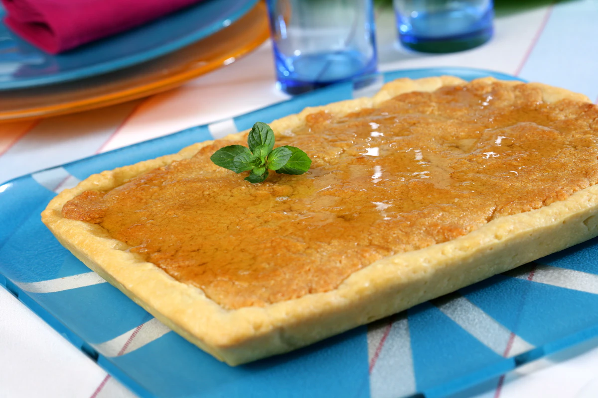

Inicio
Sobre mí
Recetas
Contacto
Otras Cosas
Coca con Miel

⏰
Tiempo total:
45 minutos
Ingredientes
4 huevos
4 cucharadas de azúcar
150 g de harina
1/2 sobre de levadura (10 g)
Mantequilla
Hojas de menta
150 ml de miel
100 ml de ron
150 ml de agua
250 g de azúcar
Preparación
1.
Preparar el almíbar mezclando los ingredientes y cocinando durante 15 minutos a temperatura varoma. Reservar y enfriar.
2.
Separar las claras de las yemas. Montar las claras con sal durante 3 minutos. Reservar.
3.
Precalentar el horno a 180ºC.
4.
Mezclar las yemas con los demás ingredientes. Verter la mezcla en un molde untado con mantequilla.
5.
Hornear durante 20 minutos a 180ºC. Enfriar y pinchar la superficie para regar con el almíbar. Dejar reposar para absorber el almíbar.
Autor: Postres Clásicos
Consejos:
Decora con hojas de menta para un toque fresco y colorido.
Recetas